Empire Stone × Empire Granite — QA
Golden Path — Slab: ตัดจาก Block ขาย ส่ง เก็บเงิน รับคืน ตรวจ และตัดทิ้ง
อัปเดตล่าสุด: 11 ตุลาคม 2569 (2026-10-11) · ระบบ stone_slab_inventory เวอร์ชัน 19.0.2.109.11
เรื่องราวของ Slab หนึ่งชุดตั้งแต่ Block เข้าคลังจนถึงแผ่นสุดท้าย: ซื้อ Block → ตัดเป็น Slab 60 แผ่น → ขาย 10 แผ่น → ส่งของโดยสแกน Serial → ใบแจ้งหนี้ → ลูกค้าคืน 2 แผ่น → ตรวจรับ 1 แผ่น ตัดทิ้ง 1 แผ่น · รันจริงโดยผู้ใช้บน eg-tst เมื่อ 11 ต.ค. 2569 · ชุดเก่า (5 ต.ค.) ยังเก็บไว้ เพราะหน้าจอเปลี่ยนไปมาก
15Test Case ทั้งหมด
4หมวด
12High Priority
3Medium Priority
0Low Priority
A. ซื้อ Block และรับเข้าคลัง
ซื้อเป็นตัน แล้วรับเป็นก้อนจริง ระบบสร้างเอกสาร Block ให้เอง · 2 test cases
| TC ID | Scenario | Precondition | Steps | ข้อมูลตัวอย่าง | Expected Result | Priority | ภาพหน้าจอ |
|---|---|---|---|---|---|---|---|
| TC-GP-SCS-01 | สร้างใบสั่งซื้อ (PO) Block เป็นตัน แล้ว Confirm เลือกตันที่หาร 2.7 ลงตัว (7.29 ตัน = 2.70 ลบ.ม.) ราคาจะไม่เพี้ยนเศษสตางค์ · ตอนพิมพ์ชื่อสินค้า อย่ากดบรรทัด "Create ..." ใน dropdown เพราะจะสร้างสินค้าซ้ำ |
เข้าระบบเป็น Empire Granite · มีผู้ขายและหินดำชานตง (SHANDONG BLACK) พร้อมสินค้า Block ในระบบ |
|
Vendor = A-Test-Vender Qty (Ton) = 7.29 Price / Ton = 10,000 |
Quantity 2.7000 ลบ.ม., Unit Price 27,000.00, ยอดก่อน VAT 72,900.00, VAT 7% 5,103.00, รวม 78,003.00 บาท · หลัง Confirm มีปุ่มสมาร์ท Receipt 1 ใบ (ตัวอย่างจริง P00094) | High | 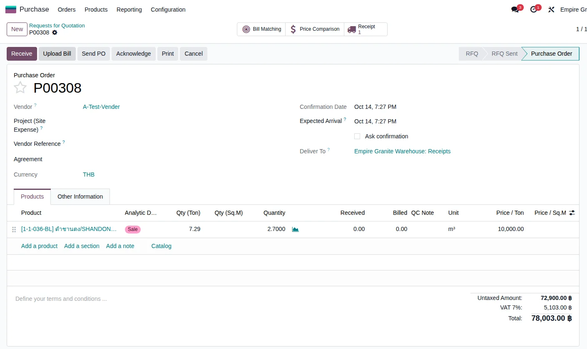 |
| TC-GP-SCS-02 | รับ Block กรอกขนาด แล้ว Validate การ์ด Block แสดง "ประมาณ 28 แผ่น / 135.00 ตร.ม." ตร.ม. รวมตรงกับที่ตัดจริง แต่จำนวนแผ่นต่างจากใบสั่งตัด (60 แผ่น) เพราะการ์ดประมาณจากขนาด Slab มาตรฐานของวัสดุ ไม่ได้ดูรูปทรงก้อนนี้ — ใช้เลขในใบสั่งตัดเป็นหลัก |
ทำ TC-GP-SCS-01 เสร็จแล้ว |
|
ขนาด Block = 2.50 × 1.20 × 0.90 ม. | ใบรับของเป็น Done, Quantity 2.70 เท่ากับที่สั่ง จึงไม่มี Backorder · ได้ Block ใหม่ 1 ก้อน (ตัวอย่างจริง BLK-26-0037) สถานะ "ใช้ได้" ขนาด 2.50 × 1.20 × 0.90 = 2.70 CBM · 7.29 ตัน ต้นทุน 10,000 บาท/ตัน (27,000 บาท/CBM) อ้างอิง PO P00094 ผลการตัด "ยังไม่ได้ตัด" | High | 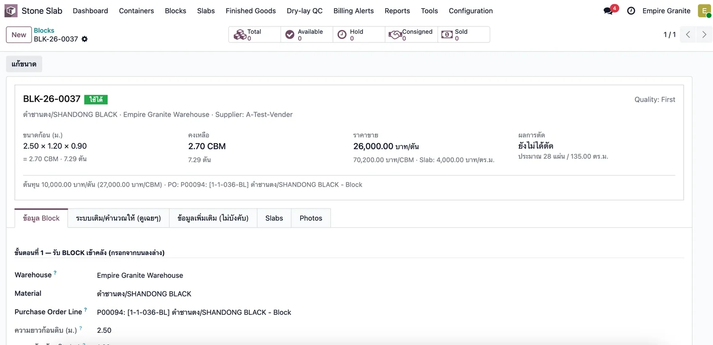 |
B. ตัด Block เป็น Slab (Cut Order)
สร้างใบสั่งตัด ย้าย Block ไปสถานีตัด ยืนยัน แล้วตัดเสร็จ ได้ Slab ทีละแผ่น · 3 test cases
| TC ID | Scenario | Precondition | Steps | ข้อมูลตัวอย่าง | Expected Result | Priority | ภาพหน้าจอ |
|---|---|---|---|---|---|---|---|
| TC-GP-SCS-03 | สร้างใบสั่งตัด เลือก Block ผิว และความหนา ใบสั่งตัดที่ยังเป็น Draft แท็บ Components อาจแสดง "60.00 m³ Not Available" เป็นการคูณตามสูตรมาตรฐานของ Odoo ไม่ใช่ปริมาณที่ใช้จริง พอ Confirm จะกลับเป็น 2.70 ลบ.ม. · ถ้าไม่มี Sale Order ต้องเลือก "เหตุผล (กรณีไม่มี SO)" ก่อนจึงจะ Confirm ได้ |
ทำ TC-GP-SCS-02 เสร็จแล้ว (Block อยู่ที่ Stone Available) |
|
Block = BLK-26-0037 Finish = Polished Thickness = 2 cm เหตุผล = งานเพิ่ม (Extra work) |
การ์ดบนหน้าแสดง Block ที่ตัด BLK-26-0037 เหลือ 2.70 CBM · ขนาดเป้าหมาย 2.50 × 0.90 ม. Polished หนา 0.02 ม. · ความคืบหน้า ประมาณ 60 แผ่น = 135.00 ตร.ม. · "จะได้ Slab: ... Slab (Polished, 2 cm)" · แท็บ "Slab ที่ตัดได้ (แผน/จริง)" มีแผน 60 แถว (หน้าละ 40 แถว) · มีแถบเหลืองบอกให้กด "ย้ายไปสถานีตัด" ก่อน Confirm | High | 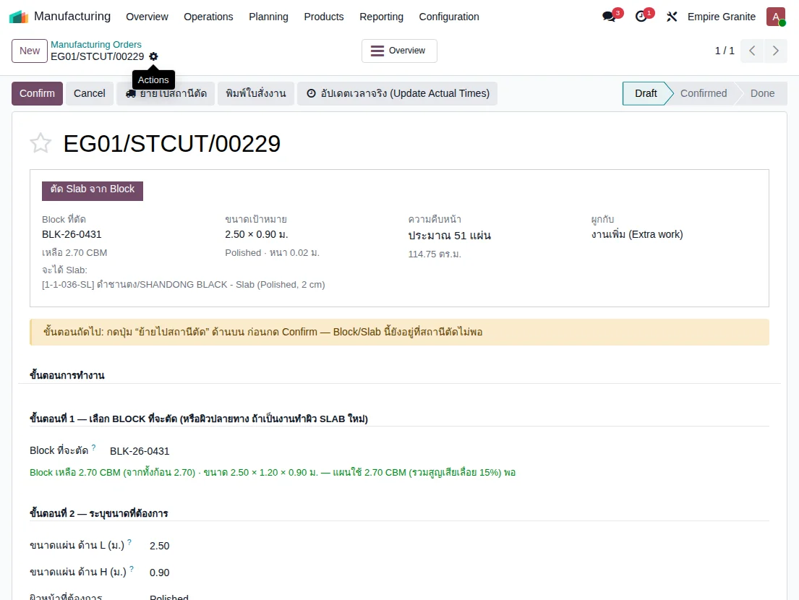 |
| TC-GP-SCS-04 | ย้าย Block ไปสถานีตัด แล้ว Confirm ต้องกด "ย้ายไปสถานีตัด" ก่อน Confirm เสมอ เพราะ Block ต้องอยู่ที่สถานีตัดก่อน · หลังย้าย มีข้อความมุมจอ "ย้ายสำเร็จ ... กด Confirm ได้เลย" |
ทำ TC-GP-SCS-03 เสร็จแล้ว |
|
- | ข้อความ "ย้ายสำเร็จ (Moved). Block BLK-26-0037 ย้ายไป Stone Production แล้ว 2.700 หน่วย — กด Confirm ได้เลย" · หลัง Confirm ปุ่มเปลี่ยนเป็น "ตัดเสร็จ", Component Status = Available, ผู้รับผิดชอบเป็นผู้ใช้ปัจจุบัน (ตัวอย่างจริง EG01/STCUT/00050) | High | 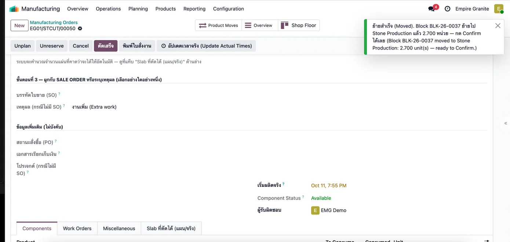 |
| TC-GP-SCS-05 | กด "ตัดเสร็จ" ได้ Slab ทีละแผ่น ชื่อ Slab ที่ตัดจาก Block ตั้งตามชื่อ Block (BLK-26-0037-1, -2, ...) ส่วน SLB-26-xxxx ใช้กับ Slab ที่ซื้อมาเป็นแผ่น · จำนวนแผ่นเป็นค่าสูงสุดตามทฤษฎี ยังไม่หักเนื้อหินที่หายไปกับใบเลื่อย |
ทำ TC-GP-SCS-04 เสร็จแล้ว |
|
ขนาดจริงทุกแผ่น = ขนาดแผน (2.50 × 0.90 × 0.02) ไม่ต้องแก้ช่อง "จริง" | ข้อความ "Complete Cut สำเร็จ ... ตัดได้ 60 แผ่นจาก BLK-26-0037" · สถานะ Done · Serial Numbers 60 · 60 แถวมีขนาดจริง 2.50 × 0.90 × 0.02 · การ์ดสรุป 135.00 ตร.ม. (100% ของแผน) · Block เหลือ 0 CBM · Slab BLK-26-0037-1 ถึง -60 สถานะ Available ต้นทุน 540 บาท/ตร.ม. (72,900 ÷ 135) ราคาขาย 4,000 บาท/ตร.ม. | High | 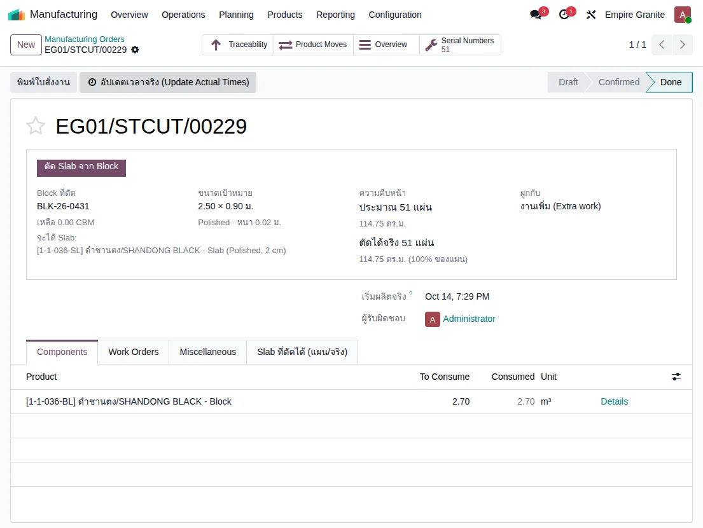 |
C. ขาย ส่งของ และเก็บเงิน
เลือกแผ่นที่จะขายเข้าใบสั่งขาย ส่งโดยสแกน Serial แล้วออกใบแจ้งหนี้ · 5 test cases
| TC ID | Scenario | Precondition | Steps | ข้อมูลตัวอย่าง | Expected Result | Priority | ภาพหน้าจอ |
|---|---|---|---|---|---|---|---|
| TC-GP-SCS-06 | สร้างใบเสนอราคา แล้วเลือกแผ่นที่จะขาย (Select Slabs) | ทำ TC-GP-SCS-05 เสร็จแล้ว (มี Slab Available) |
|
ลูกค้า = Demo Hotel Customer Finish = Polished, Thickness = 2 cm เลือก BLK-26-0037-1 ถึง -10 (10 แผ่น) |
บรรทัดสินค้าเป็น "10 แผ่น = 22.50 ตร.ม. · 4,000 ฿/ตร.ม." แสดงรายชื่อ 10 แผ่น แต่ละแผ่น 2.50 × 0.90 × 0.020 ม. = 2.25 ตร.ม. · Quantity 10.00 Units, Unit Price 9,000.00 (2.25 × 4,000) · สมาร์ทปุ่ม Slabs = 10 (ตัวอย่างจริง S00213) | High | 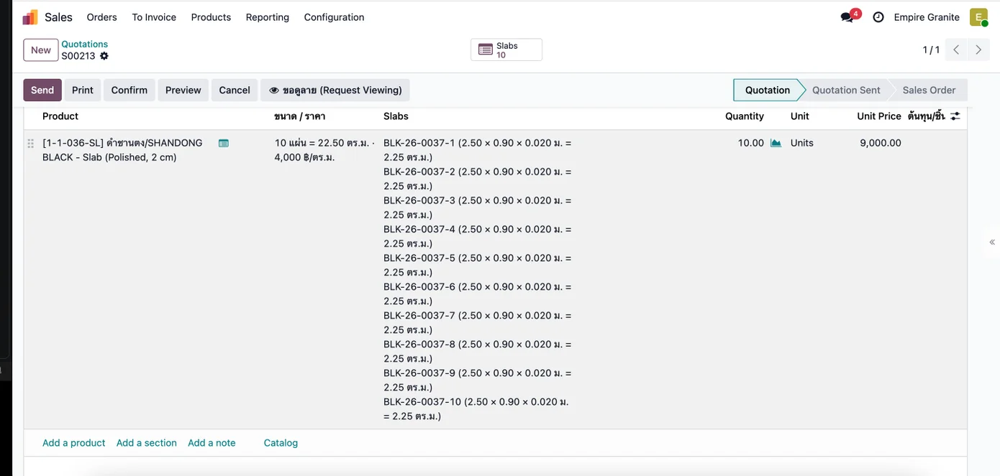 |
| TC-GP-SCS-07 | Confirm ใบสั่งขาย ⚠ แถบแดง "ขนาดแผ่นจริงต่างจากที่เสนอลูกค้า" ขึ้นได้ปกติ เพราะใบเสนอราคาใช้ขนาด Slab มาตรฐานของวัสดุ (3.00 × 1.60 = 4.80 ตร.ม.) แต่แผ่นจริงที่เลือกคือ 2.25 ตร.ม. ระบบล็อกยอดไว้ที่ 90,000 ตามที่เสนอและเตือนเซลล์ให้แจ้งลูกค้า เป็นพฤติกรรมตามออกแบบ (ADR-079/085) ไม่ใช่ข้อผิดพลาดและไม่ห้ามการ Confirm |
ทำ TC-GP-SCS-06 เสร็จแล้ว |
|
- | สถานะ Sales Order · มีสมาร์ทปุ่ม Delivery 1 ใบ และ Slabs 10 · บรรทัดสินค้าเขียน "ล็อกยอด 90,000 ฿ (ตามใบเสนอ) · แผ่นจริง 10 แผ่น = 22.50 ตร.ม. · ราคาสินค้า 4,000 ฿/ตร.ม." · ยอดก่อน VAT 90,000.00, VAT 7% 6,300.00, รวม 96,300.00 บาท | High | 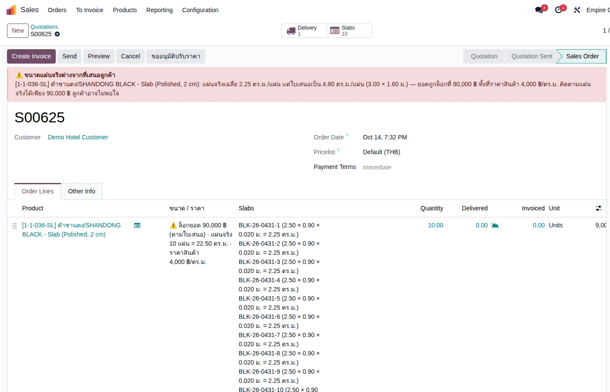 |
| TC-GP-SCS-08 | ส่งของ — สแกน Serial ทุกแผ่นแล้ว Validate | ทำ TC-GP-SCS-07 เสร็จแล้ว |
|
Serial = BLK-26-0037-1 ถึง BLK-26-0037-10 | ใบส่งของเป็น Done จาก Stone Inventory/Stone Available Demand 10.00 Quantity 10.00 Units · ใบสั่งขาย Delivered = 10 · Slab ทั้ง 10 แผ่นเปลี่ยนสถานะเป็น Sold (ตัวอย่างจริง EG01/OUT/00107) | High | 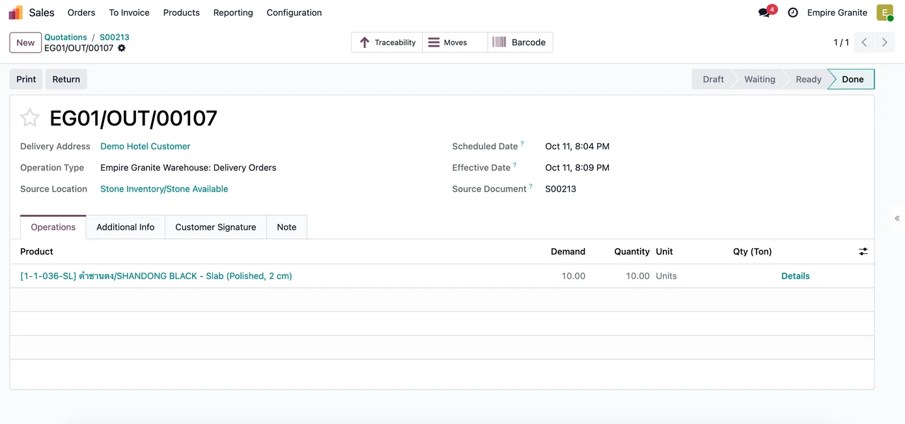 |
| TC-GP-SCS-09 | ออกใบแจ้งหนี้ลูกค้า และ Confirm | ทำ TC-GP-SCS-08 เสร็จแล้ว |
|
- | ใบแจ้งหนี้สถานะ Posted · บรรทัดสินค้า 10.00 Units ราคา 9,000.00 รวม 90,000.00 บาท · ยอดก่อน VAT 90,000.00, VAT 7% 6,300.00, รวม 96,300.00 และ Amount Due 96,300.00 · แท็ก Analytic เป็น Sale / Granite / วัสดุ / BLK-26-0037 (ตัวอย่างจริง INV/2026/00022) · ช่อง Qty (Ton) ว่างเป็นปกติสำหรับ Slab | High | 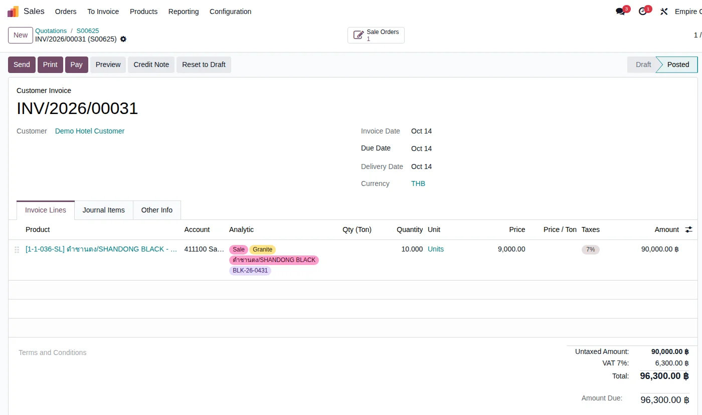 |
| TC-GP-SCS-10 | ตรวจรายการบัญชีของใบแจ้งหนี้ (ต้นทุนขายตามต้นทุนแผ่นจริง) | ทำ TC-GP-SCS-09 เสร็จแล้ว |
|
ต้นทุน = 22.50 ตร.ม. × 540 = 12,150 (แผ่นละ 1,215) | เดบิต 112100 ลูกหนี้การค้า 96,300.00 · เครดิต 411100 รายได้จากการขาย 90,000.00 · เครดิต 213200 ภาษีขาย 6,300.00 · เดบิต 511110 ต้นทุนขาย (COGS) 12,150.00 · เครดิต 113120 สินค้าคงเหลือ Slab (Ready-Made) 12,150.00 · ยอดรวมสองฝั่งเท่ากัน 108,450.00 | High | 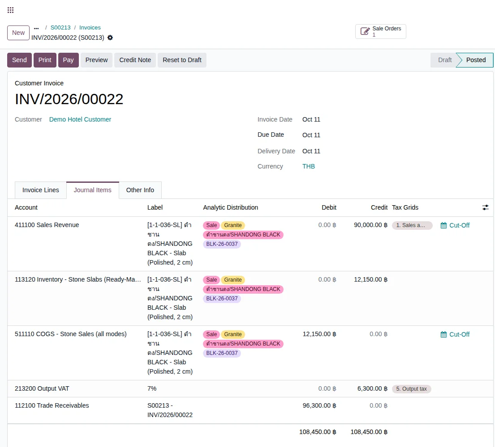 |
D. ลูกค้าคืน Slab ตรวจรับ และตัดทิ้ง
แผ่นที่คืนเข้า Returned - Inspect ก่อนเสมอ ตรวจแล้วใช้ได้กลับไปขาย หรือชำรุดให้ตัดทิ้ง · 5 test cases
| TC ID | Scenario | Precondition | Steps | ข้อมูลตัวอย่าง | Expected Result | Priority | ภาพหน้าจอ |
|---|---|---|---|---|---|---|---|
| TC-GP-SCS-11 | รับคืน Slab 2 แผ่นจากลูกค้า ใบรับคืนไม่เลือกแผ่นไว้ให้ ผู้รับของต้องระบุเองว่าแผ่นไหนถูกคืน เพราะลูกค้าอาจคืนไม่ครบ ตัวเลือกมีเฉพาะแผ่นที่อยู่ที่ลูกค้า · ช่อง Return ตอนเปิดครั้งแรกแสดง 0.00 เป็นปกติของ Odoo ให้กด Return All |
ทำ TC-GP-SCS-08 เสร็จแล้ว (ใบส่งของ Done) |
|
แผ่นที่คืน = BLK-26-0037-9 และ BLK-26-0037-10 | ใบรับคืนเป็น Done รับจาก Demo Hotel Customer ปลายทาง Stone Inventory/Returned - Inspect เอกสารต้นทาง "Return of EG01/OUT/00107" · Demand 10.00 แต่ Quantity 2.00 และ ไม่มี Backorder เกิดขึ้น · ข้อความมุมจอ "รับเข้าสำเร็จ / Received ... (Validated successfully)" (ตัวอย่างจริง EG01/IN/00097) | High | 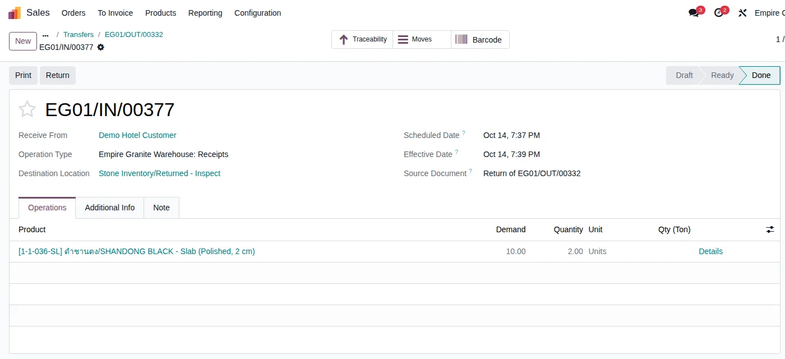 |
| TC-GP-SCS-12 | หาแผ่นที่คืนและรอตรวจ หน้ารายการ Slab เปิดมาพร้อมตัวกรอง Available ซึ่งซ่อนแผ่นที่รอตรวจไว้ ให้เอาตัวกรองออกหรือใช้ตัวกรอง Pending Inspection · รายการจะมีแผ่นรอตรวจของงานอื่นบนระบบทดสอบปนอยู่ด้วย ให้ดูเฉพาะแผ่นของเรา |
ทำ TC-GP-SCS-11 เสร็จแล้ว |
|
- | เห็น BLK-26-0037-9 และ BLK-26-0037-10 สถานะ "Returned - Pending Inspection" (สีส้ม) ขนาด 2.50 × 0.90 × 0.020 ม. = 2.25 ตร.ม. On Hand 1.00 · ยังไม่นับเป็นของพร้อมขาย และไม่โผล่ในตัวกรอง Available | Medium | 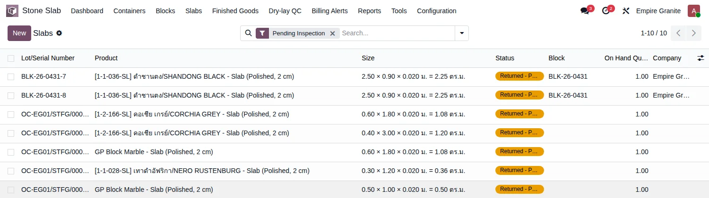 |
| TC-GP-SCS-13 | ตรวจแล้วแผ่นใช้ได้ นำกลับไปขาย การ์ดอาจยังเขียน "ถูกเลือกในใบขาย: S00213" หลังตรวจแล้ว เป็นแค่ประวัติของใบขายเดิม ไม่ได้กันไม่ให้ขายซ้ำ (ระบบกันเฉพาะแผ่นที่ถูกเลือกในใบเสนอราคาที่ยังเป็นร่างหรือส่งแล้ว) · การ์ดแสดง "แรงตัด 1,000 บาท" แยกจากต้นทุน 1,215 เป็นข้อมูลแสดง ไม่ได้รวมในต้นทุนขายของใบแจ้งหนี้ |
ทำ TC-GP-SCS-12 เสร็จแล้ว |
|
แผ่น = BLK-26-0037-9 | สถานะกลับเป็น Available ที่เก็บ Stone Inventory/Stone Available · ขนาด 2.500 × 0.900 × 0.020 = 2.2500 ตร.ม. · ต้นทุน 1,215.00 บาท เท่าเดิม ราคาขาย 4,000.00 บาท/ตร.ม. (≈ 9,000 บาท/แผ่น) · ปุ่มตรวจและปุ่มตัดทิ้งหายไป และเลือกขายได้ใหม่ | High | 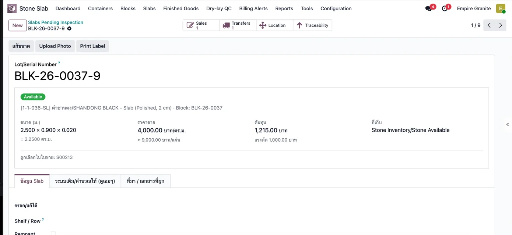 |
| TC-GP-SCS-14 | ตรวจแล้วแผ่นชำรุด — ตัดทิ้ง (Scrap) ทดสอบการย้ายสต็อกแล้ว (SP/00008 Done) แต่ยังไม่ได้ตรวจรายการบัญชีของการตัดทิ้ง จึงยังไม่ระบุผลบัญชีใน test case นี้ |
ทำ TC-GP-SCS-12 เสร็จแล้ว |
|
แผ่น = BLK-26-0037-10 | สถานะแผ่นเป็น Elsewhere ที่เก็บ Inventory adjustment · ระบบสร้างเอกสาร Scrap ของ Odoo สถานะ Done จำนวน 1 ย้ายจาก Returned - Inspect ไป Inventory adjustment (ตัวอย่างจริง SP/00008) · แผ่นไม่อยู่ในสต็อกขายอีก | Medium | 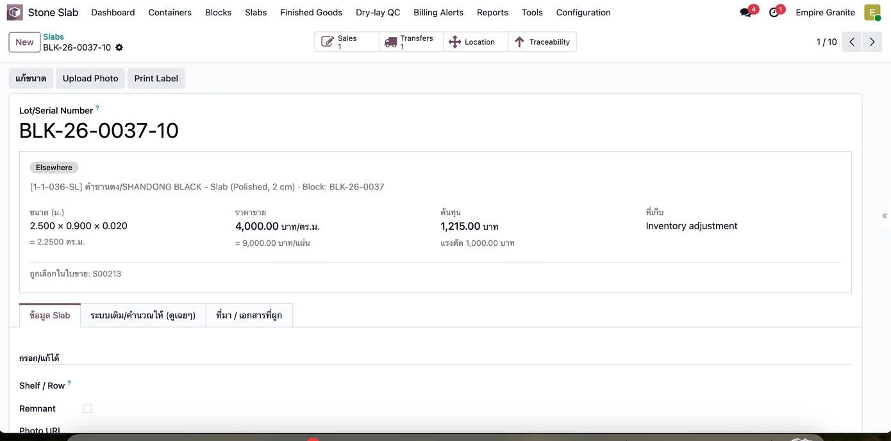 |
| TC-GP-SCS-15 | ตรวจยอดรวม Slab ของ Block หลังจบเส้นทาง | ทำ TC-GP-SCS-14 เสร็จแล้ว |
|
- | Slab ทั้งหมด 60 แผ่น = Available 51 แผ่น (114.75 ตร.ม.) + Sold 8 แผ่น (18.00 ตร.ม.) + ตัดทิ้ง 1 แผ่น (2.25 ตร.ม.) · รวม 135.00 ตร.ม. ตรงกับที่ตัดได้ในใบสั่งตัด | Medium | - |